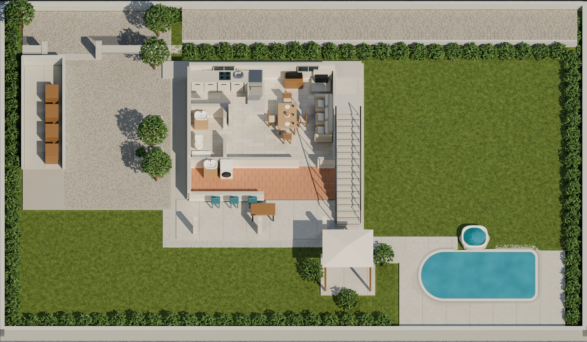
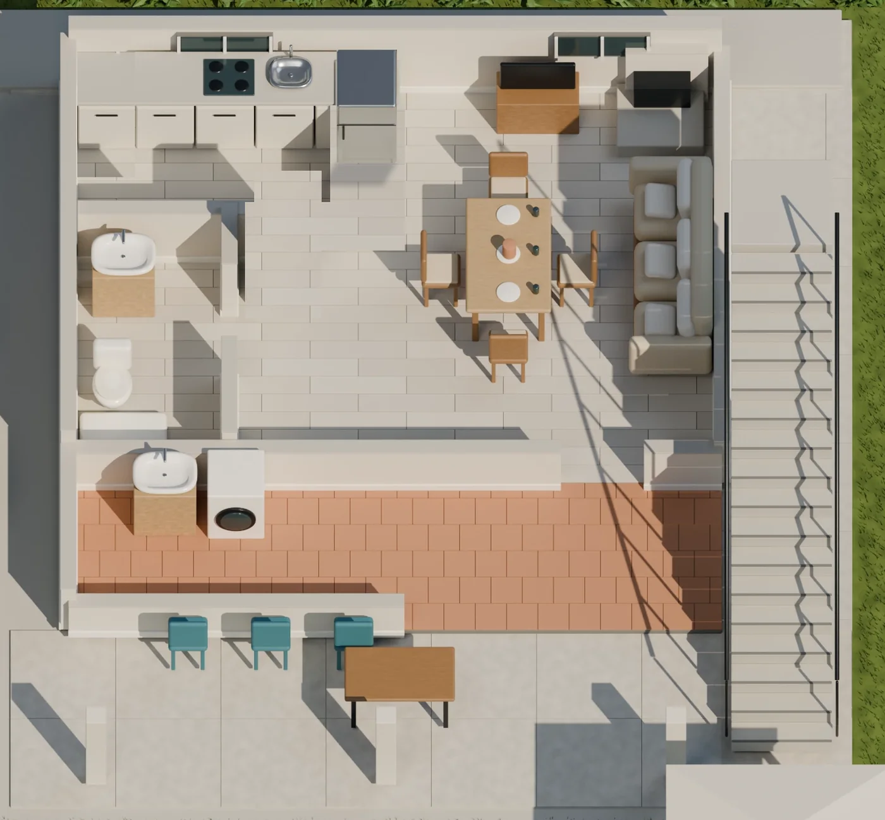
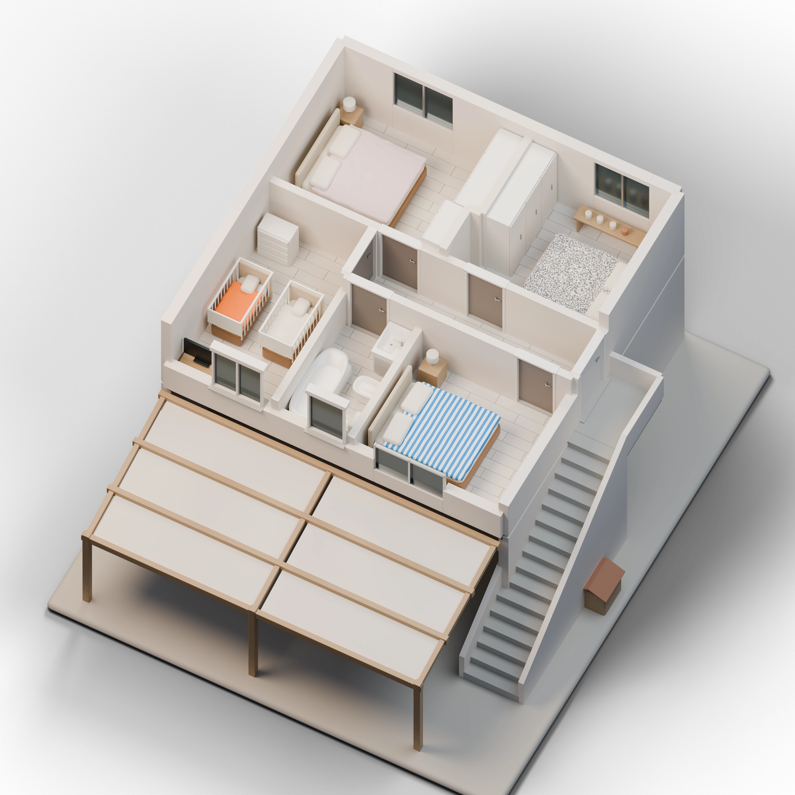
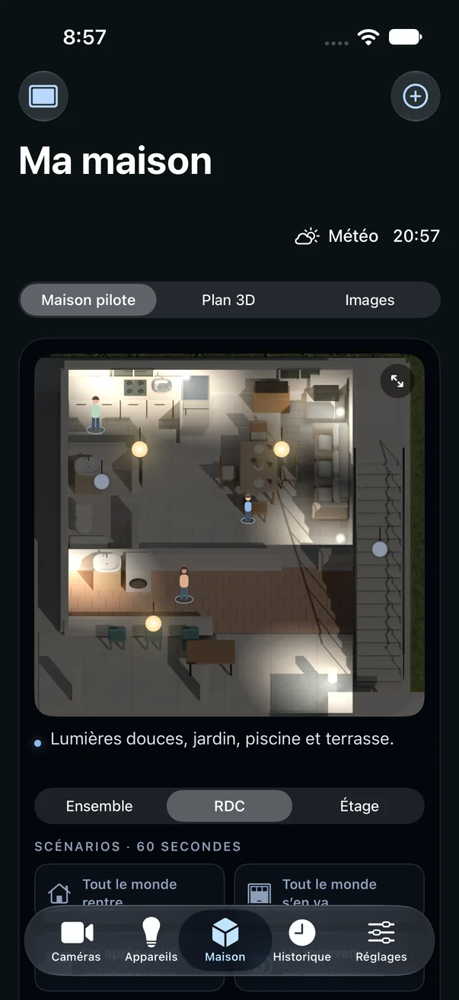
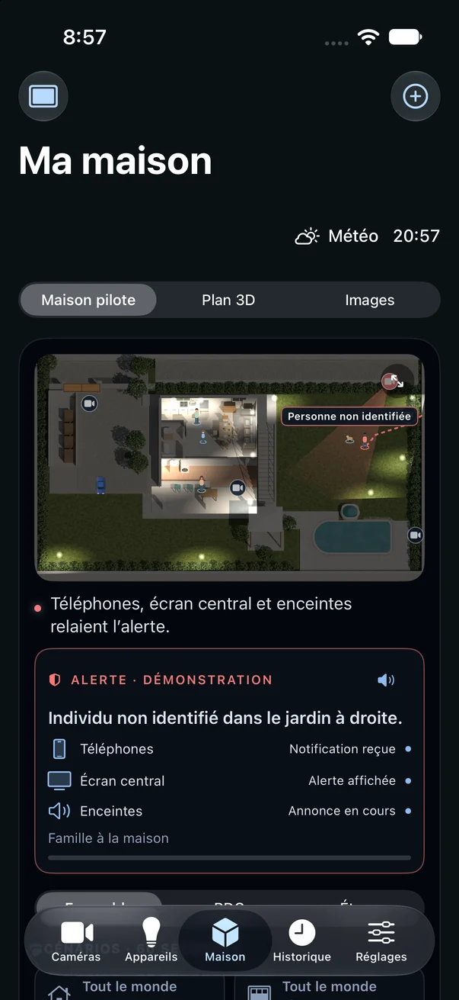

Le soir tombe.
La maison passe doucement en mode soirée. Rien à faire.
Parks 3D
Chaque pièce, chaque lumière, le portail et le jardin sur une seule image. Vous regardez, vous touchez, la maison répond.
Essayer la maison piloteVoir une soirée

La maison passe doucement en mode soirée. Rien à faire.
Le portail s’ouvre, l’entrée s’éclaire avant même que vous coupiez le moteur.
La terrasse, puis le séjour et la cuisine. La lumière vous précède.
Le jardin et la piscine s’allument ensemble, d’un seul geste.
Tout s’éteint, le portail est fermé. La maison veille.
Trois vues
L’ensemble pour le jardin et le portail. Le rez-de-chaussée pour la vie de tous les jours. L’étage pour les chambres.


La maison est calme. Les caméras du jardin regardent pour vous.
La caméra du jardin suit la personne et montre son chemin sur l’image.
Le téléphone, l’écran central et les enceintes relaient l’alerte. Les volets de l’étage se ferment.
L’app Bonaparks
Sur iPhone et iPad. Touchez une ampoule pour l’allumer, changez d’étage, rejouez une scène. À l’horizontale, la maison prend tout l’écran.


La maison pilote se visite dans le navigateur, sans compte.
Essayer la maison piloteComment ça marche
Maison pilote : personnages, équipements et alertes simulés. Rien n’est suivi ni commandé.